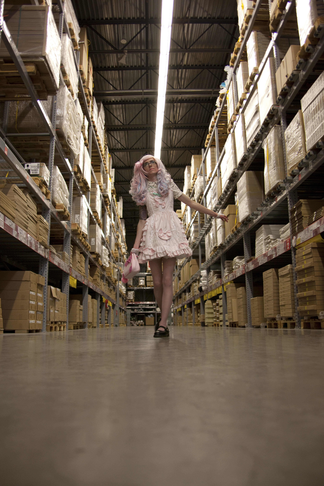
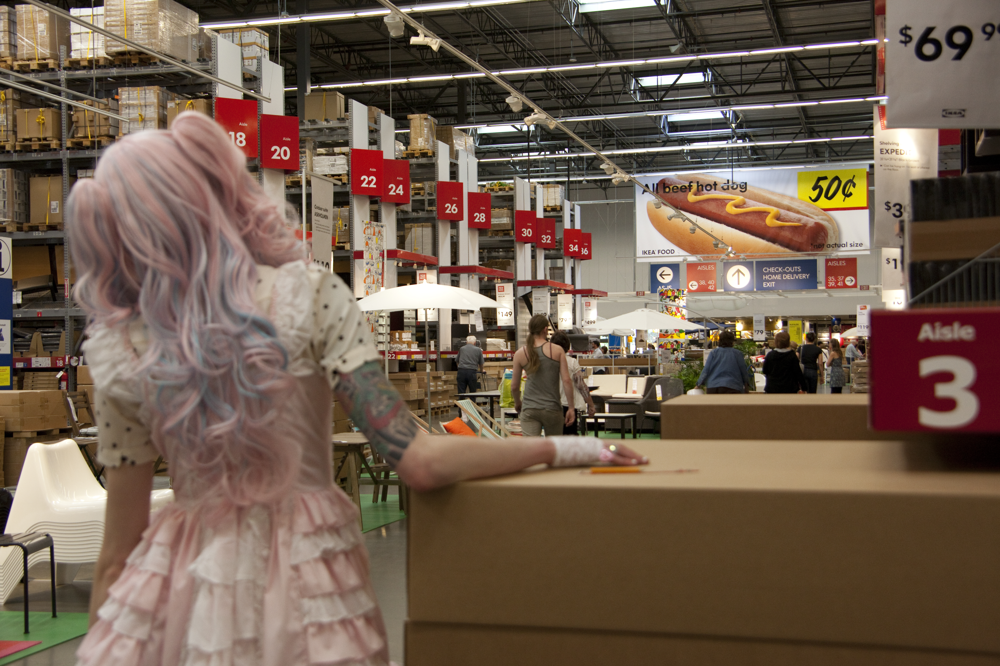
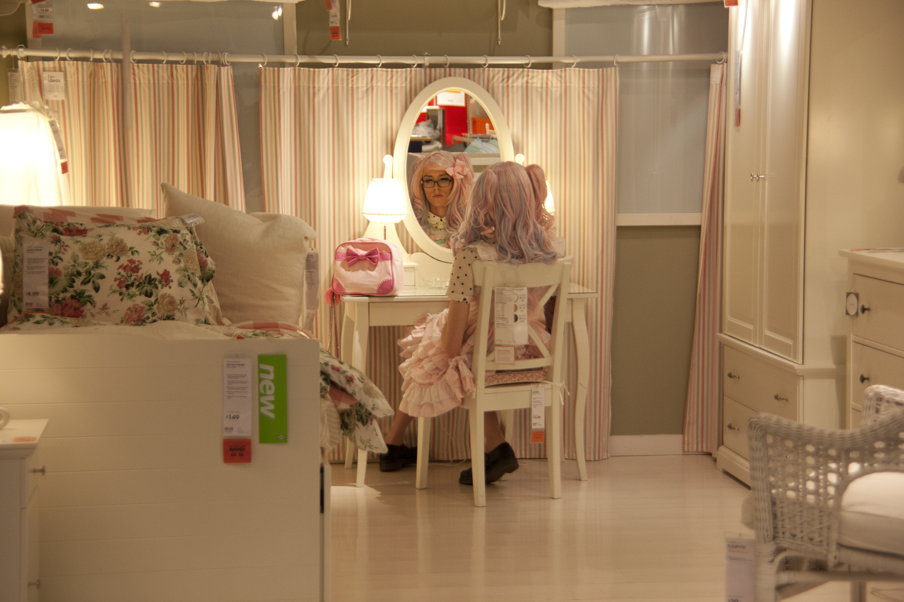
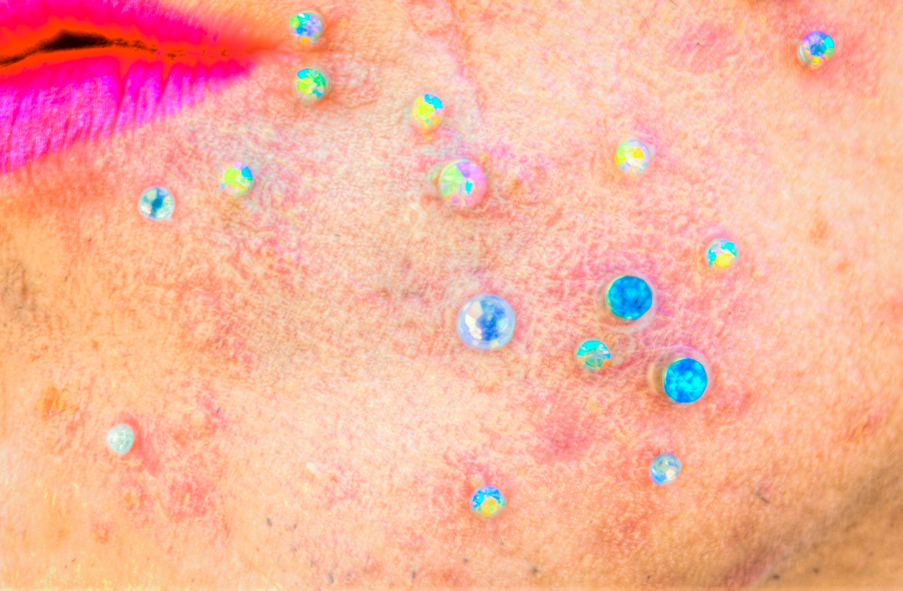
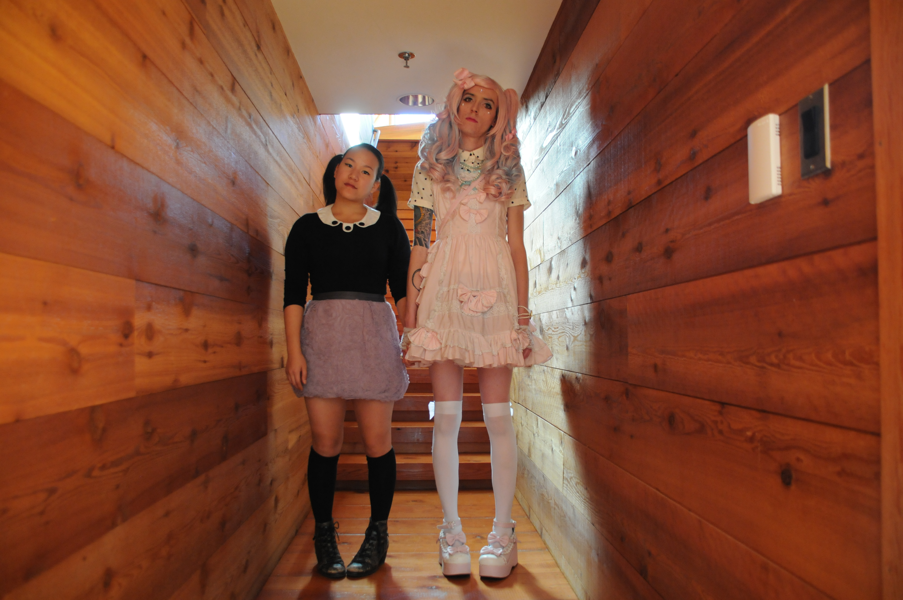
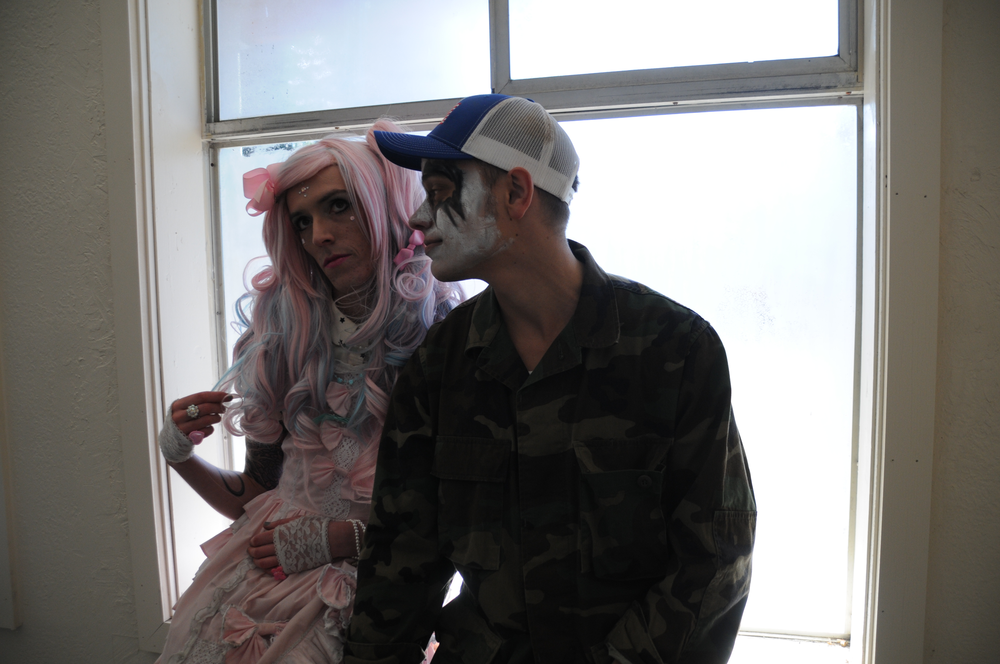
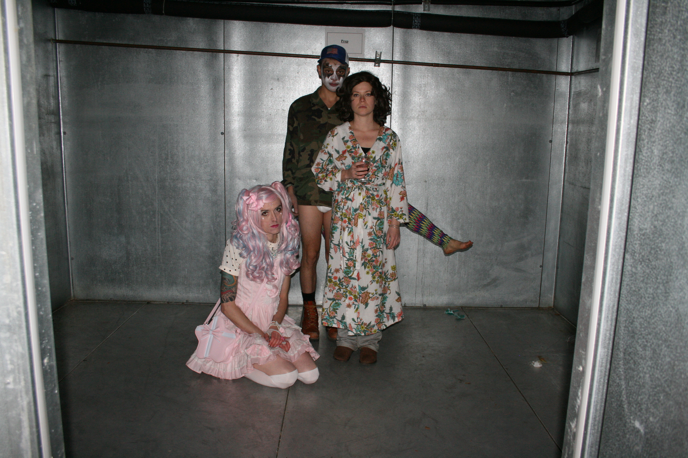

Loli
Loli is an ongoing performative project exploring the gap between fantasy identity and
embodied experience. Loli began as a durational performance where the artist presented as
Loli everyday for the period of one month. Subsequent projects have investigated fashion
as social armor, LARP, and the impact of netspace on imaginative self.
Loli is the subject of an essay, 4chan Saves Lives published in 2013 by
Social Malpractice Publishing.






